Business Central, easier to work in
Architecture
Screens & connections
Web client
Tablet & phone
Windows client
Teams & Outlook
Copilot & agents
MCP
API & OData
SOAP
Customised with
A browser extension, per person.
Nothing is installed in BC.
Business logic
Posting & validation
Pages & reports
Workflows & approvals
Permissions
Integrations
Customised with
Apps or partner code. Developer work, re-tested at every BC update.
Database
Tables & fields
Company data
Customised with
New fields come in through AL table extensions.
The closer to the data, the more development, testing and upgrade work.
Why it's safe
No extension to deploy, no partner project.
No account, no server, no tracking.
A problem report goes out by your own email.
Every improvement has its own switch. Web client, colours and Help & feedback each pause with one.
Chrome Web Store, for Chrome and Edge.
English, Dutch and French.
Online and on-premises.
Copy values
Without BC Buddy
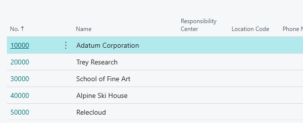
A No. or an amount is a link: clicking it opens a page instead of selecting it.
With BC Buddy
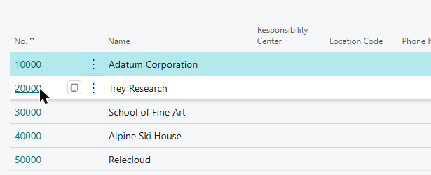
Point at a value,
click the copy icon,
paste it anywhere.
Maximize pages
Without BC Buddy
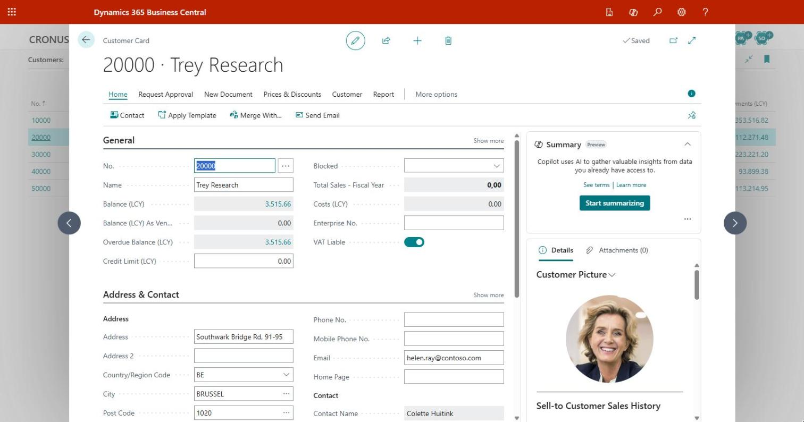
The card opens as a narrow window over the list.
Labels get cut off.
With BC Buddy
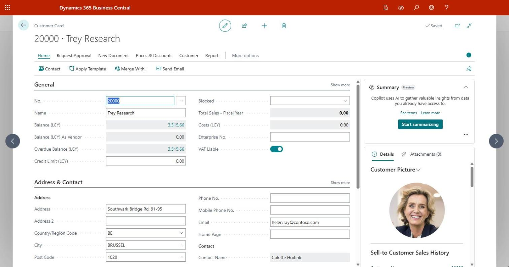
Every page opens in wide layout:
more room for fields, nothing cut off.
Pin the action bar
Without BC Buddy
The actions hide
behind the tabs:
one more click, every time.
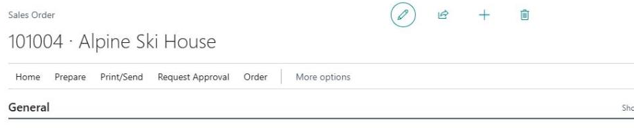
With BC Buddy
The action bar is pinned:
Post, Release and more
stay in view.
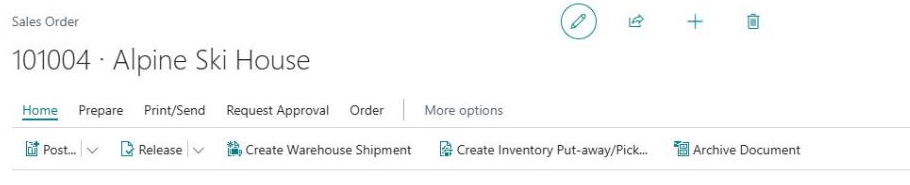
Dropdown size
Without BC Buddy
Only No. and Description fit. The rest hides behind a sideways scrollbar.
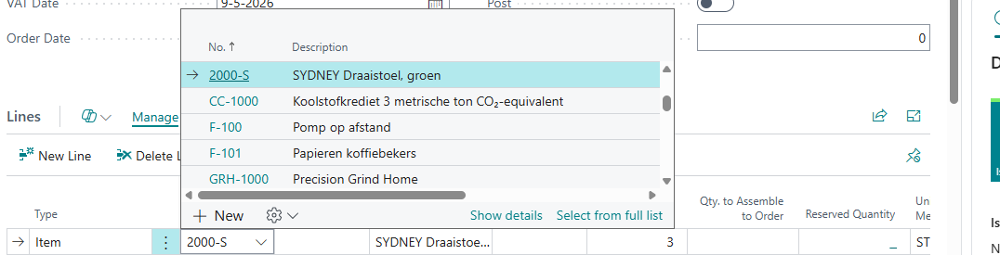
With BC Buddy
As wide as its columns need: unit, price and inventory at a glance.
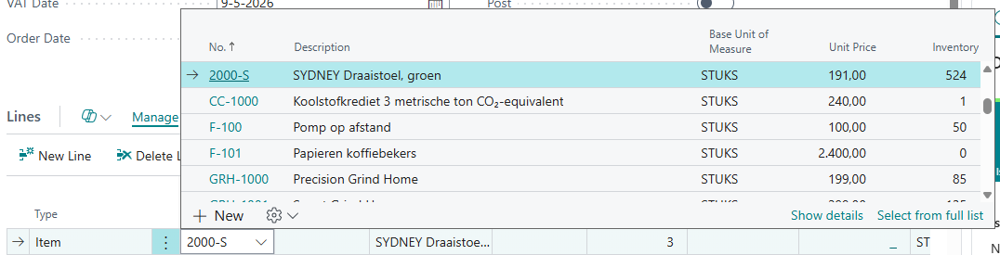
Week numbers in the date picker
Without BC Buddy
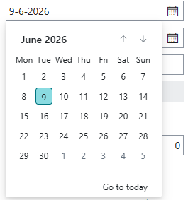
Planning talks in weeks, but BC's calendar doesn't show them.
With BC Buddy
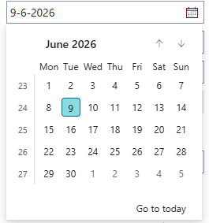
The week number in front of each week, counted the way BC counts weeks.
Highlight the current line
Without BC Buddy
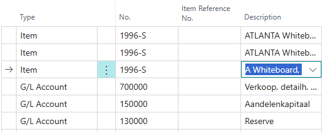
Only a small arrow at the far left
shows which line you are on.
With BC Buddy
The whole line gets a light tint,
edge to edge.
Keyboard shortcuts
Business Central hides its shortcuts at the end of a button's tooltip. The BC Buddy icon in the top bar opens them in a side panel:
On this page: the page's own actions, such as Post (F9)
Where your cursor is: the lines, the list, the card or the date field
Anywhere: a few that always work, such as Alt+Q
The side panel sits next to Business Central, not on top of it, and changes along with the page.
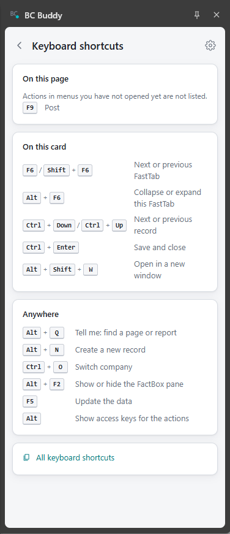
Striped rows
Without BC Buddy
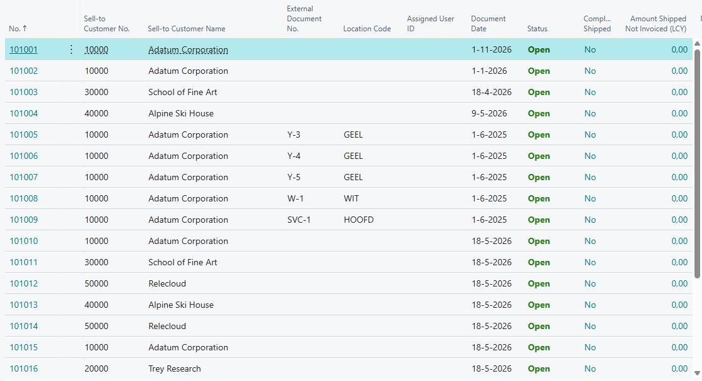
Every row is white. Halfway across, your eye slips to the next one.
With BC Buddy
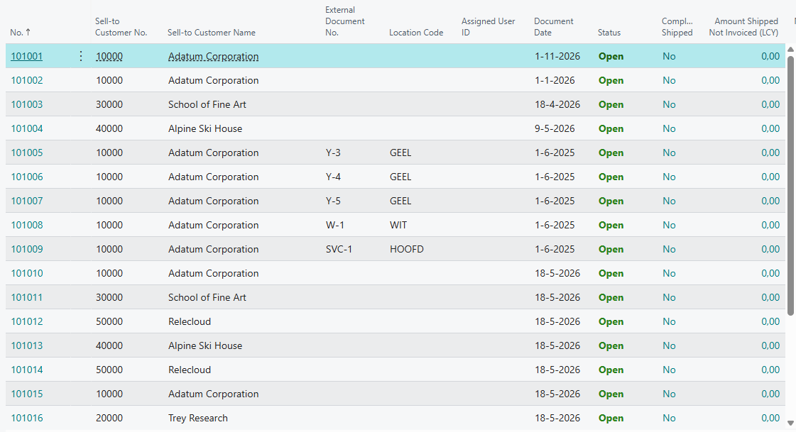
Every other row a light grey, from the first column to the last.
Hide the FactBox pane
Without BC Buddy
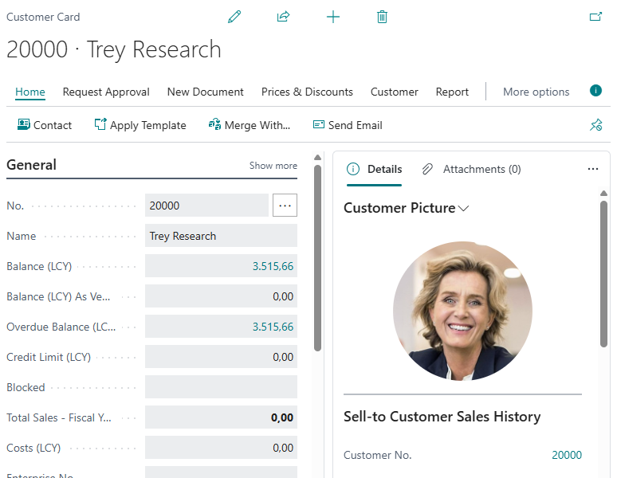
The FactBox pane takes half the card. The fields squeeze into one column.
With BC Buddy
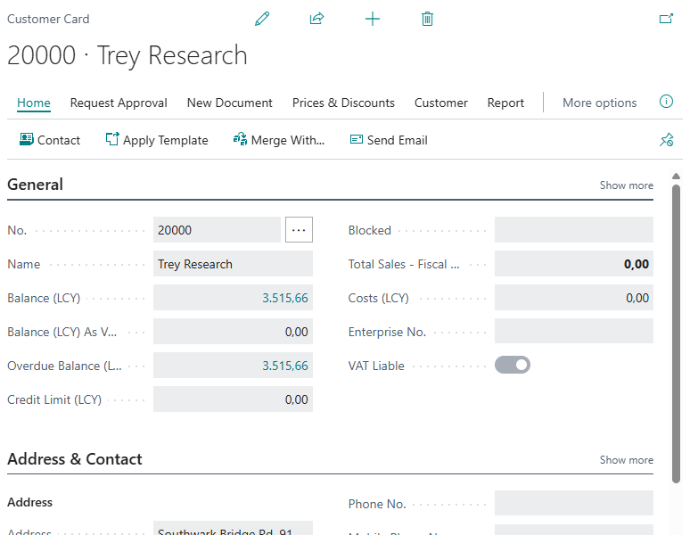
The pane stays closed. The fields use the whole width.
Environment colours
Without BC Buddy
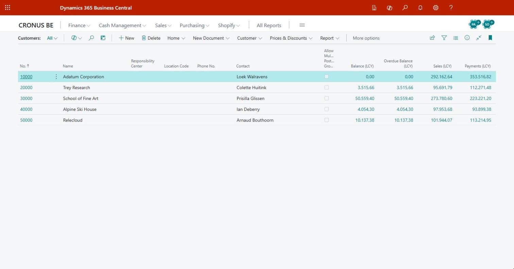
Test and production look exactly alike. Nothing says where you are.
With BC Buddy
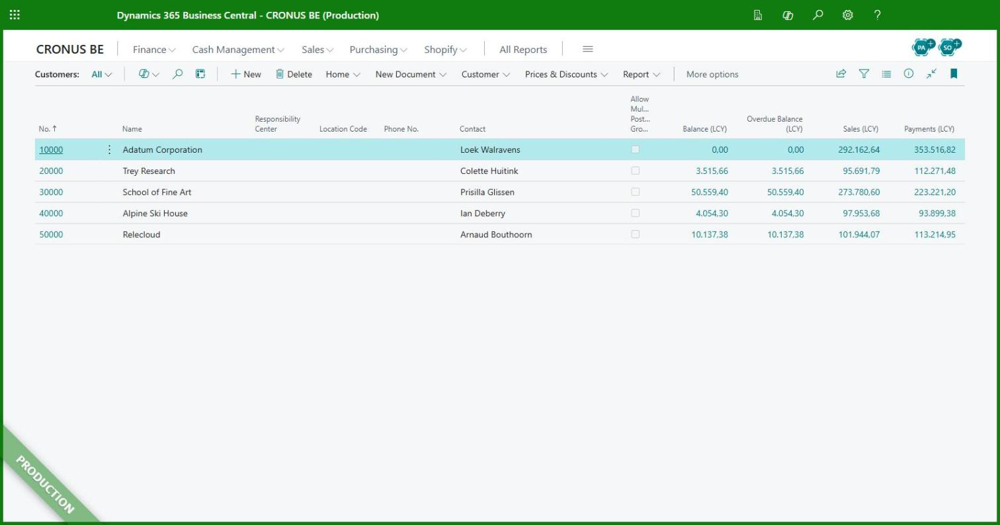
Production in green: its name in the top bar,
a frame and a banner in the corner.
Help & feedback
The BC Buddy icon in the top bar opens Report a problem in a side panel next to Business Central:
Step by step: a line of text and a screenshot of each step, the whole screen or just a region
Point it out: an arrow, a pen or a box, and blur what others must not see
Email: the report opens in your own email app, with the company, the environment and a link to each page
IT sets the helpdesk address and the priorities once, for everyone.
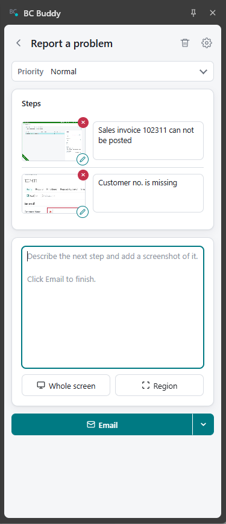
Getting started
01
Add BC Buddy from the Chrome Web Store, in Chrome or Edge. The web client improvements work straight away.
02
Switch on the colours: four sample rules are ready, so production never looks like a test.
03
Export your settings to one file. Colleagues add its address once, or IT sets it by policy, and everyone gets every later change.
Free
Nothing installed in Business Central
A switch for every part